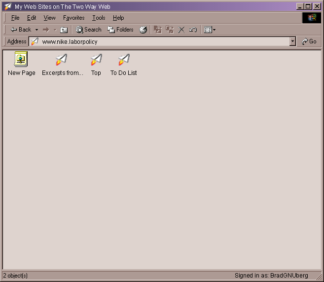

| | |
Table of Contents | Last | Next
Using the Windows Explorer to Manage Your Two Way Web Sites
Paper Airplane deeply integrates with Windows by making the Two Way Web Sites that you are a member of appear as folders on your hard-drive. You can open these Two Way Web Site folders and use third-party applications, such as Macromedia Dreamweaver or Microsoft Word, to save and load pages right from your Two Way Web Sites.
Important: You must be connected to the Internet for this functionality to work.
To see your Two Way Web Sites you can right-click on the Paper Airplane icon in the Windows Taskbar and select File Browser:
 Right-Click
Menu for Windows Taskbar Icon
Right-Click
Menu for Windows Taskbar Icon
This will open the Windows File Explorer to the My Web Sites on the Two Way Web folder:

My Web Sites on the Two Way Web
You can also navigate to this folder by double-clicking the My Network Places icon on your desktop:

My Network Places Icon
This will show the My Network Places folder in the Windows File Explorer:

Top-Level of My Network Places
Double-click the My Web Sites on the Two Way Web folder to open it:
My Web Sites on the Two Way Web
If you have not signed into the Two Way Web yet a Sign-On dialog will appear:
Sign-On Dialog Appearing While Browsing With Windows File Explorer
Entering a username and password to sign-in to the Two Way Web. The Sign-On dialog will also appear if you navigate to the My Web Sites on the Two Way Web icon using the file browser that appears in the File/Save As... dialog, such as in Microsoft Office (tm).
After signing in you will see a list of the Two Way Web Sites for which you are either a Member or a Manager of:
My Web Sites on the Two Way Web
To create a new site, click the New Site icon:
New Site Icon in the Windows File Explorer
This will start the New Site Wizard right within the file browser:
The First Step of the New Site Wizard Appearing on Top of the Windows File Browser
After creating your new site it's icon will appear right within the Windows File Explorer.
Deleting, Renaming, Cutting, Copying, and Pasting operations are not allowed on Two Way Web Site icons. If a Two Way Web Site icon is right-clicked, it will present the following options in the right-click menu:
Both Open and Explore open the Two Way Web Site in the Windows File Explorer. Select Properties to see the About this Site... dialog:
About this Site Dialog in the Windows File Explorer
In the main My Web Sites on the Two Way Web folder, any New sub-menus only have one entry: New Site.
Double-click on a Two Way Web Site to see the pages in that site:

Looking into a My Network Places Folder
To create a new page on this site press the New Page button:
The New Site Icon in the Windows File Explorer
This will show the New Page Dialog right within the Windows File Explorer:
Choose a New Base Document Dialog in the Windows File Explorer
Choose a base document for your new page. After pressing the OK button, the dialog will disappear and a file named New Two Way Web Page.page will appear in the file browser. You can then change the name of the page and press enter.
Double-click a page to view it in the Paper Airplane browser. If you right-click a Two Way Web Page the following options will be shown:
The Cut and Delete operations are only enabled for Managers and not Members of the current Two Way Web Site. Edit will open the page in the Paper Airplane editor. Properties will open the About this Page... dialog window. The other operations do what you would expect them to.
Load and save files from your Two Way Web Sites using programs that don't know anything about Paper Airplane. For example, the screenshot below shows the Save As dialog for Microsoft Word after navigating to the My Web Sites on the Two Way Web folder in My Network Places:

Microsoft Word Save As Dialog